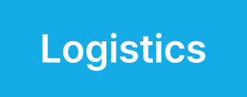

Overview
물류 산업은 창고·운송·재고 관리가 단절되면 비용과 리스크가 급격히 증가합니다. 웅진은 ERP와 EWM·TMS·IoT 센서 기반 시스템을 통합해 물류 전 과정을 실시간 가시화하고 운영 효율을 높입니다.
디지털 통합 플랫폼으로 효율적인 물류 관리 체계 마련
복잡한 물류 현장에서 발생하는 다양한 문제를 해결하기 위해 웅진은 디지털 통합 플랫폼을 제공합니다. 이 플랫폼은 물류의 전체 프로세스를 디지털화하여 효율성을 극대화하는 것을 목표로 합니다. 디지털 물류는 기업 고객이 변화하는 시장 환경에 적응하고, 경쟁력을 유지하며, 지속 가능한 성장을 이루기 위해 필수적입니다. 규모의 재고를 디지털 환경에서 실시간으로 추적 관리함으로써 적정 재고 수준을 유지하고, 재고 부족이나 과잉을 방지할 수 있습니다. 실시간으로 재고 수준을 모니터링하고 관리하여 재고 관리의 정확성을 높이고, 재고 회전율을 높여보세요. 표준 물류 프로세스 기반의 디지털 통합 플랫폼은 복잡한 물류 현장에서 효율적인 관리 체계를 마련할 수 있는 가장 강력한 솔루션입니다.


Features
통합 물류 포탈 구축
복잡한 물류 정보를 하나의 플랫폼에서 실시간으로 관리하세요. 웅진은 다양한 프로젝트 경험을 바탕으로 기업 고객에 최적화된 디지털 물류 시스템을 제공합니다. 화주별, 품목별, 거래처별 데이터는 기준 정보 관리 기능을 통해 손쉽게 조회할 수 있으며, 다양한 시스템의 통합 정보로 운송 정보와 재고를 하나의 포털에서 간편하게 확인할 수 있습니다. 또한, 실무자의 업무 효율을 고려한 웹 인터페이스는 언제 어디서나 접근 가능하며, 주요 모니터링 정보는 대시보드를 통해 한눈에 파악할 수 있습니다.
선진 물류 시스템 구축
SAP의 EWM(Extended Warehouse Management)은 창고 관리부터 재고 흐름 관리까지 물류의 모든 측면을 최적화하기 위한 가장 강력한 도구입니다. SAP EWM은 S/4HANA와도 완벽하게 통합되기 때문에 기업의 전반적인 프로세스를 하나의 플랫폼으로 관리할 수 있는 장점이 있습니다. 하나로 통합된 시스템은 높은 데이터 정합성을 보장합니다. SAP EWM은 기업의 성장에 따라 시스템내 프로세스 구현과 확장이 가능하며, 다양한 산업군에 맞춰 커스터마이징이 가능하기 때문에 기업 특성에 맞게 요구사항을 충족할 수 있습니다. 경험을 통해 다져진 웅진만의 4대 추진전략과 3대 핵심목표를 바탕으로 성공적인 통합물류시스템을 구현하세요.